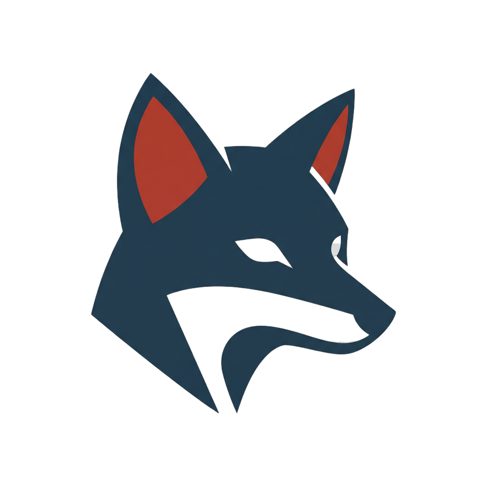
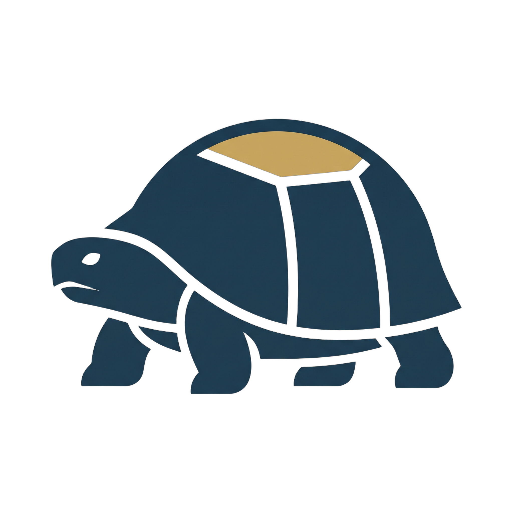
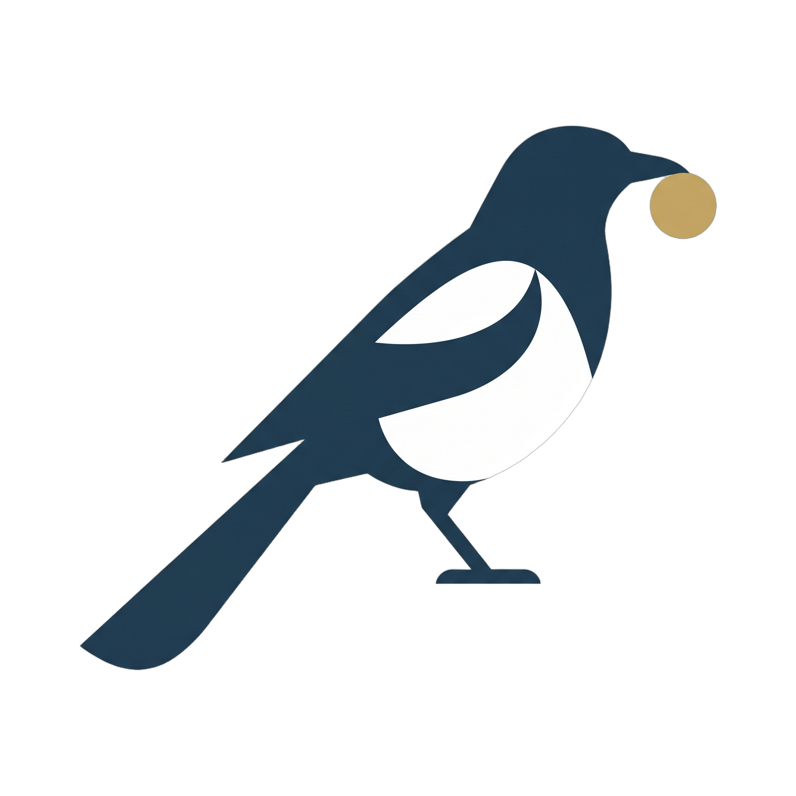

A fund needs a name you can check
You buy a fund because of a sentence on the first page. It chases winners. It buys what just fell. It stays quiet when the market gets loud. That sentence is the promise.
Three people live by it. A compliance officer checks whether the fund drifted away from the promise. An investor checks whether this fund fills a hole in what they already own. After a bad year, a regulator asks whether the losses match the risk the fund said it would take. In Europe the promise is written into the fund's mandate. In the United States it is written on Form N-1A, and the Names Rule says the stocks in the fund have to back the words.
A learning machine skips the sentence. Each morning you get a list. This much in this stock. That much in the next. A number for how the day went. Did it chase, fade, or hide? The list does not say.
We read the list. The name we file is one you can set next to the stocks the fund actually held.
Six habits
We read each list and file it under one habit. A cheetah chases what has already been going up. A fox buys what has just been beaten down. A tortoise wants a quieter mix. A magpie crowds into a few exciting names. A hummingbird changes the mix when the market's mood changes. An owl is the rest: no single habit won.

ContrarianFox
Risk managerTortoise
SpeculatorMagpie Tactical rotatorHummingbird GeneralistOwlToo close to "a bit of everything"
If a book owns almost the same slice of every stock, it has no habit to name. We withhold the name when it sits within 12.5 percent of that even split. Owning a very different mix is a difference you can see. It is not, by itself, proof the book was clever.
What the 179 books turned out to be
179 books were different enough to name. The reading was locked before we counted, so the names were not adjusted after the fact. A habit has to lead the next habit by a clear margin, 0.25 on the score. If it does not, the book is an owl.
The count: 11 cheetahs, 32 foxes, 18 tortoises, 21 magpies, 19 hummingbirds, and 78 owls. Someone had already given 106 of the books a name by design. On a strict reading, that name and our reading matched 7 times.
| Personality | Books | Share | $1 became |
|---|---|---|---|
| Trend follower | 11 | 6.1% | |
| Contrarian | 32 | 17.9% | |
| Risk manager | 18 | 10.1% | |
| Speculator | 21 | 11.7% | |
| Tactical rotator | 19 | 10.6% | |
| Generalist | 78 | 43.6% |
Start with one dollar in January 2014. The column is what that dollar became by December 2024, for one stored book of each habit. The gold line on the chart is the even split, the same amount in every stock.
A small toll on every change
Moving money from one stock to another is not free. We charge five basis points, five hundredths of one percent, on the amount moved. The book pays that toll while it is learning, and the same toll is on the path you see here. So it never practices in a world without costs and then meets costs only at the end.
On 105 books the toll that actually showed up was often a bit higher than five. About 6.5 basis points when the book can drop stocks to zero, about 10 when every stock keeps a crumb, about 13 when each score is capped and then the book is filled again.
One decision, six parts
Every book makes the same kind of decision. Yesterday's news comes in. A network turns it into a hunch for each stock. A reward says what "good" meant that day. A last step turns hunches into amounts of money, and some versions of that step can leave a stock at exactly zero while others always leave a crumb. Then the toll is charged. The next day, the network has been nudged by how that day went.